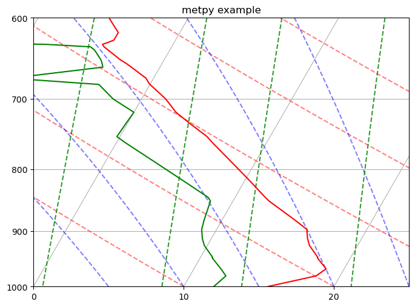
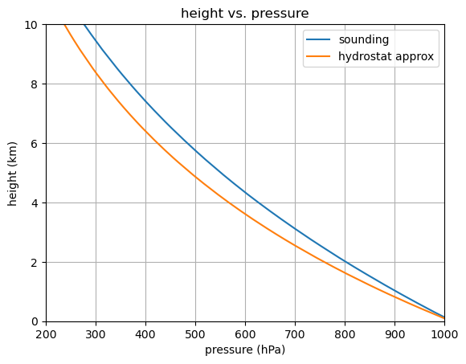

Assign 2: Solution - Scale heights for typical atmospheric soundings#
Here is the hydrostatic_scaling_solution.ipynb download link.
Tasks#
Get a unique sounding for your assigned region and season
Plot the dewpoint and temperature soundings using metpy
Write a function to calculate the pressure scale height
Write a funcion to calculate the density scale height
Plot the vertical pressure profile vs. the hydrostatic pressure profile for your pressure scale height
1. Getting a sounding#
In the cell below, change the region, year, month and station to get a unique sounding for analysis (i.e. I’d like to spread out the soundings among regions and seasons). The url for the Wyoming page is: https://weather.uwyo.edu/upperair/sounding.html
from a405.soundings.wyominglib import write_soundings
import numpy as np
from pathlib import Path
current_dir = Path()
sounding_dir = (current_dir / 'sounding_dir').absolute()
print(f"{str(sounding_dir)=}")
write = True
if write:
region = 'samer'
year = '2013'
month= '7'
start = '0100'
stop = '0110'
station = '71109'
values=dict(region=region,year=year,month=month,start=start,stop=stop,station=station)
write_soundings(values, sounding_dir)
str(sounding_dir)='/Users/phil/repos/a405/assignments/sounding_dir'
input_dict={'region': 'samer', 'year': '2013', 'month': '7', 'start': '0100', 'stop': '0110', 'station': '71109'}
len(html_doc)=14503 from write_soundings
header is: 71109 YZT Port Hardy Observations at 00Z 01 Jul 2013
here is the day: 130701
files written to /Users/phil/repos/a405/assignments/sounding_dir
from a405.soundings.wyominglib import read_soundings
wyoming_dict = read_soundings(sounding_dir)
sounding_dict = wyoming_dict['sounding_dict']
the_sounding = sounding_dict[(2013, 7, 1, 0)]
press = the_sounding['pres'].to_numpy() #hPa
dewpoint = the_sounding['dwpt'].to_numpy() #degC
temp = the_sounding['temp'].to_numpy() # degC
height = the_sounding['hght'].to_numpy() #m
tempK = temp + 273.15
pressPa = press*100.
height_km = height/1000.
the_sounding
| Unnamed: 0 | pres | hght | temp | dwpt | relh | mixr | drct | sknt | thta | thte | thtv | |
|---|---|---|---|---|---|---|---|---|---|---|---|---|
| 0 | 0 | 1014.0 | 17.0 | 18.4 | 14.8 | 80.0 | 10.493078 | 350.0 | 5.0 | 290.4 | 320.3 | 292.2 |
| 1 | 1 | 1012.0 | 34.0 | 17.0 | 12.3 | 74.0 | 8.911909 | 346.0 | 6.0 | 289.2 | 314.6 | 290.7 |
| 2 | 2 | 1001.0 | 125.0 | 15.6 | 12.0 | 79.0 | 8.832533 | 327.0 | 11.0 | 288.7 | 313.8 | 290.2 |
| 3 | 3 | 1000.0 | 133.0 | 15.6 | 12.0 | 79.0 | 8.841491 | 325.0 | 11.0 | 288.8 | 313.9 | 290.3 |
| 4 | 4 | 980.0 | 306.0 | 18.4 | 12.4 | 68.0 | 9.268841 | 320.0 | 10.0 | 293.2 | 320.1 | 294.9 |
| ... | ... | ... | ... | ... | ... | ... | ... | ... | ... | ... | ... | ... |
| 145 | 145 | 10.0 | 31750.0 | -35.1 | -73.1 | 1.0 | 0.194108 | 80.0 | 35.0 | 887.4 | 889.8 | 887.5 |
| 146 | 146 | 9.2 | 32309.0 | -33.9 | -72.4 | 1.0 | 0.233963 | 95.0 | 29.0 | 912.3 | 915.4 | 912.4 |
| 147 | 147 | 8.8 | 32614.0 | -33.2 | -72.0 | 1.0 | 0.259383 | 85.0 | 42.0 | 926.2 | 929.6 | 926.4 |
| 148 | 148 | 8.1 | 33223.0 | -31.9 | -71.2 | 1.0 | 0.316642 | 105.0 | 34.0 | 954.6 | 958.9 | 954.8 |
| 149 | 149 | 7.8 | 33528.0 | -31.3 | -70.8 | 1.0 | 0.348418 | 105.0 | 38.0 | 969.1 | 973.9 | 969.3 |
150 rows × 12 columns
2. Plot the sounding#
from metpy.plots import SkewT
from metpy.units import units
from matplotlib import pyplot as plt
import numpy as np
fig,ax =plt.subplots(1,1,figsize=(8,8))
fig.clf()
skew_plot = SkewT(fig)
skew_plot.ax.set_title("metpy example")
skew_plot.ax.set(xlim=(0,25),ylim=(1000,600))
theta = np.array([0,10,20,30,40,50,60]) + 273.15
theta = theta*units("K")
skew_plot.plot_dry_adiabats(t0=theta)
skew_plot.plot_moist_adiabats()
skew_plot.plot_mixing_lines()
skew_plot.plot(press,temp,'r')
skew_plot.plot(press,dewpoint,'g');

3. Calculate the pressure scale height#
Here is equation 14 of the hydrostatic balance notes
where
a. Turn this into a python function called calc_scale_height that takes sounding vectors of temperature, pressure and height and returns the pressure scale height in meters
b. Use this to find the pressure scale height in meters as a scalar variable named Hbar
#
# in this cell define a function called
#
# calc_scale_height(T,p,z)
# which takes vertical profiles of temperature, pressure and height and calculates the
# pressure scale height in meters
#
g=9.8 #don't worry about g(z) for this exercise
Rd=287. #kg/m^3
def calc_scale_height(T,p,z):
"""
Calculate the pressure scale height H_p
Parameters
----------
T: vector (float)
temperature (K)
p: vector (float) of len(T)
pressure (pa)
z: vector (float) of len(T
height (m)
Returns
-------
Hbar: vector (float) of len(T)
pressure scale height (m)
"""
dz=np.diff(z)
TLayer=(T[1:] + T[0:-1])/2.
oneOverH=g/(Rd*TLayer)
Zthick=z[-1] - z[0]
oneOverHbar=np.sum(oneOverH*dz)/Zthick
Hbar = 1/oneOverHbar
return Hbar
3. Answer#
Hbar = calc_scale_height(tempK,pressPa,height)
print(f"{Hbar=:.0f} meters")
Hbar=6881 meters
4. Calculate the density scale height#
Similarly, equation (23) of the hydrostatic balance notes is:
Which leads to
and the following python function:
#
# in this cell define a function called
#
# calc_dense_height(T,p,z)
# which takes vertical profiles of temperature, pressure and height and calculates the
# density scale height in meters
#
def calc_dense_height(T,p,z):
"""
Calculate the density scale height H_rho
Parameters
----------
T: vector (float)
temperature (K)
p: vector (float) of len(T)
pressure (pa)
z: vector (float) of len(T
height (m)
Returns
-------
Hbar: vector (float) of len(T)
density scale height (m)
"""
dz=np.diff(z)
TLayer=(T[1:] + T[0:-1])/2.
dTdz=np.diff(T)/np.diff(z)
oneOverH=g/(Rd*TLayer) + (1/TLayer*dTdz)
Zthick=z[-1] - z[0]
oneOverHbar=np.sum(oneOverH*dz)/Zthick
Hbar = 1/oneOverHbar
return Hbar
4. Answer#
Hrho = calc_dense_height(tempK,pressPa,height)
print(f"{Hrho=:.0f} meters")
Hrho=7156 meters
5. How does the hydrostatic profile compare to the observed pressure sounding?#
Now check the hydrostatic approximation by plotting the pressure column against
vs. the actual sounding p(T):
5. Answer#
#
# In this cell make a plot with two lines,
#
# line 1: press (hPa) vs. height_km (vertical axis)
# line 2: press p(z) from equation 5 (hPa) vs. height_km
#
# include a legend that clear identifies the two lines
# set the y axis limits from 0 to 10 km
#
fig,theAx=plt.subplots(1,1)
hydroPress=press[0]*np.exp(-height/Hbar)
theAx.plot(press,height_km,label='sounding')
theAx.plot(hydroPress,height_km,label='hydrostat approx')
theAx.set_title('height vs. pressure')
theAx.set_xlabel('pressure (hPa)')
theAx.set_ylabel('height (km)')
theAx.set_xlim([200,1000])
theAx.set_ylim([0,10])
theAx.grid(True)
theAx.legend(loc='best');
